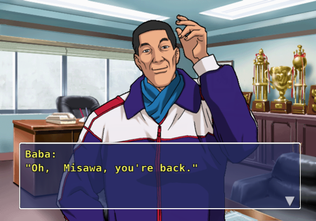
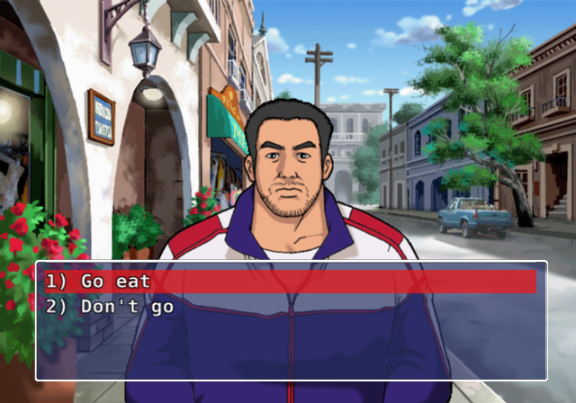
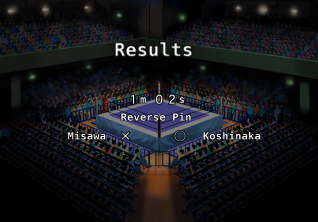

Pick a wrestler, and his career plays out in scenes: dialogue, then a match you play or a question with two or three answers. There are seven scenarios, and each run through one plays 7 to 15 matches. The list runs Misawa, Mutoh, Hashimoto, Chono, then Onita and Sakuraba as they unlock, then Liger in the All Unlocked patches. This guide and its Route Map follow that order.
Before each match the game asks Quick save? and which of its five story slots to use, shared across every scenario. A loss doesn't stop you in any story but Liger's: the story simply goes on with the loss scene. So that save before a match is your retry.

Dialogue. The speaker's name leads each page.

A choice. Some answers quietly change the story score.

The result screen after a story match.
The Story Score
A hidden number starts at 0 and can't go below 0. Some scenes check it, "over 15", which means 16 or more, and send you one way or the other. The game never shows it. It changes four ways:
Win points. Most match scenes add 1 or 2 for a win.
Loss penalties. In every story but Sakuraba's and Liger's, 48 match scenes take away 1 or 2 for a loss. Those two take nothing.
Answers. Some answers add points and three take them away.
The match bonus, after every match you play, win or lose, up to +3:
+1 if the clock ended between 8:00 and 15:59. The clock runs at double speed, so that's about 4 to 8 real minutes;
+1 if you landed 1 to 3 critical hits (none, or four or more, gets nothing);
+1 if you ended a little ahead of your opponent on stamina, or with almost all of yours against almost none of his. Behind, level, or comfortably ahead gets nothing.
What this means in play: long, close matches open the high routes. Lasting past 8:00 on the clock is the easy point. The game wants a good match, not a quick win, and the scripted points alone can't reach most top routes. To go low, lose, answer the other way, and finish before 8:00 on the clock.
A draw counts as a loss. A result only ever picks the scene right after it. In most matches that's a different conversation, and each walkthrough names the few that change the route.
Difficulty and Rules
Each match has its own COM Level and Critical %, and your settings don't apply. Every scenario but Sakuraba's opens at Level 3 and climbs to 8 to 10, while Sakuraba's opens at 5 to 6. Look out for a difficulty spike at match 1 of both Onita's and Mutoh's stories, at Level 6. The match card says "60 Min. One Fall" even where the rules underneath are something else, and most of Sakuraba's matches are really Sub Only. Onita's deathmatches at Kawashima Ballpark are the exploding wire cage, and it blows at 30:00 on the clock, about 15 real minutes in, flooring everyone.
Story Wrestlers
Story matches use their own 101 wrestler records for 39 people, so the hero starts far below his roster numbers and catches up, and outfits change with the years. Nothing you do there changes the roster, and edit wrestlers can't be used. Locked wrestlers appear whether or not you've unlocked them.
The game doesn't rank its endings. In the walkthroughs, the top route means the one behind the highest score. The Route Map shows every scene, branch and ending for each scenario.
Mitsuharu Misawa
Who and when
Misawa from his AJPW debut through the Tiger Mask years to the top of the company. The script gives no dates; the history runs from the 1980s to 2000.
Tone
Earnest and respectful. A young man under Baba, a hungry tour of Mexico with Koshinaka ("Go eat"), and a slow climb past the men above him. The mood darkens as he takes on the company.
Size
96 scenes, 19 matches written, 10-12 per run, about 2.5-3 hours. 6 choices, 4 endings.
Unlocked
From the start. The first scenario on the list, and the natural first run.
Go all-out on offense +1 / Fight a match I won't lose -3
None
Score checks.The Weight of AJPW, after Vader: over 30 NOAH; 16-30 freelance; 15 or less, on to Staying in AJPW: over 8 AJPW revolution; 8 or less mass exodus. After this no result changes the route.
Matches
The result that changes the route: Kuniaki Kobayashi, Genichiro Tenryu, Jumbo Tsuruta, Stan Hansen, Toshiaki Kawada & Akira Taue (you: Mitsuharu Misawa & Kenta Kobashi), Toshiaki Kawada, Kenta Kobashi, Takao Omori & Yoshihiro Takayama (you: Mitsuharu Misawa & Yoshinari Ogawa), Vader, Manabu Nakanishi, Shinya Hashimoto & Yuji Nagata (you: Mitsuharu Misawa & Jun Akiyama), Kensuke Sasaki, Jun Akiyama, Keiji Mutoh.
Freelance: take every scoring answer and win the matches. 25 points is exactly this route as long as the bonus stays under 6, which is why it's the likely first ending for a strong player.
New AJPW: refuse the mask, take "a match I won't lose" and lose matches. Short matches keep the bonus off.
Revolution: aim between: refuse the mask, win about half, keep the score at 9-15.
Route to NOAH. Go eat; Become a masked man; Handle it carefully; I won't fight you; Take on the matchmaking; Go all-out on offense. Win all 9 matches up to Vader, which includes the extra tag (6). That's 25, and you need 31: 6 bonus points from 9 matches. Matches 11, 12 and 14 afterwards don't change the ending.
Missable: the Tiger Mask chapters (mask) or the Tenryu match (refuse); the Seigi Army tag; each of the four post-Vader lines has its own opponents (Hashimoto and Naoya Ogawa; Nakanishi and Choshu; Sasaki and Tenryu; Akiyama and Mutoh).
Keiji Mutoh
Who and when
Mutoh in his own voice, from a reluctant trainee to world star and his alter ego The Great Muta, through the feud with Chono. The script names 2000 once; the rest runs from the mid-1980s.
Tone
Breezy first person. He joins because "Maybe I'll go take a look?" and because he's bored of being a bonesetter. Light on its feet where the others are solemn.
Size
96 scenes, 23 matches written, 14-15 per run, about 3-3.5 hours. No choices at all: only your results and score steer it. 3 endings.
Muta Mists Inoki, after match 4: over 10 adds Inoki vs. Muta (14), which needs the bonus.
Match 5, Norton: a win goes to a grudge match with Hashimoto for the IWGP title (15); a loss to a slump and then the title match with Hashimoto (6). Both meet again.
Boss of nWo, after match 8: over 15 Kojima (16); otherwise Sasaki (9).
Match 10, Chono, the black unification match: a win goes to the farewell line; a loss goes to Lost to Chono: over 20 the AJPW line, otherwise the BATT line.
Most points without the bonus: 5, 9 and 9 at the three checks. So all three high branches need the bonus.
Matches
The result that changes the route: Tatsumi Fujinami, Akira Maeda & Nobuhiko Takada (you: Keiji Mutoh & Shiro Koshinaka), Hiroshi Hase & Kensuke Sasaki (you: Keiji Mutoh & Masahiro Chono), Rick Steiner & Scott Steiner (you: Keiji Mutoh & Hiroshi Hase), Scott Norton, Shinya Hashimoto, Shinya Hashimoto, Nobuhiko Takada, Jushin Thunder Liger, Masahiro Chono, Toshiaki Kawada, Taiyo Kea, Genichiro Tenryu, Jun Akiyama & Yuji Nagata (you: Keiji Mutoh & Hiroshi Hase), Hakushi (you: Kokushi Muso), Shinya Hashimoto & Naoya Ogawa (you: Keiji Mutoh & Hiroshi Hase), Genichiro Tenryu, Satoshi Kojima (you: The Great Muta), Mitsuharu Misawa.
Shortest way: beat Chono in match 10. The Mutoh Dojo needs no score, and matches 20-22 don't change it.
Route to King's Road Reformer. Win everything up to Chono, then lose to Chono. Nine points from the script: you need 12 bonus points from 11-12 matches. Note the trap: the hardest ending needs a deliberate loss in the biggest match of the story. You also play as Kokushi Muso (18) and The Great Muta (19) on this line.
Missable:Inoki (over 10 at Muta Mists Inoki); Kojima or Sasaki; the Norton result picks which Hashimoto match.
Shinya Hashimoto
Who and when
Hashimoto from the NJPW dojo with his classmates Chono and Mutoh to the top of the company and beyond. Mid-1980s to about 2001.
Tone
The funniest opening. It starts with a fight over a washing machine ("It's hardly... your washing machine, is it?... my good man"), and turns into a proud, stubborn warrior's story.
Size
86 scenes, 23 matches written, 11-13 per run, about 2.5-3 hours. 3 choices, 4 endings.
Find a strong opponent 0 / Throw myself into training +2
Training adds a short scene
Branch checks
Who Stands in the Way?, after Tenryu: over 8 IWGP title match with Mutoh (5); 5-8 grudge match with Chono (4); 4 or less IWGP title match with The Great Muta (3).
Belt Back at the Second Try, after losing to Takada: over 10 Choshu (7); otherwise Yamazaki (9). Beating Takada always leads to Choshu.
An Honor From Choshu, after Choshu: over 10 adds a grudge match with Sasaki (8).
Match 11, Ogawa with retirement on the line, splits the story. A loss goes to Promise Kept: Retirement: over 15 the three-way war, otherwise ZERO-ONE vs. NOAH. A win goes to Ogawa Finally Beaten: over 15 Inoki Army vs. K-1, otherwise the break with Inoki. A win is +2, a loss -2, so this match is a 4-point swing against the check right after it.
Matches
The result that changes the route: Halme, Genichiro Tenryu, The Great Muta, Keiji Mutoh, Nobuhiko Takada, Naoya Ogawa, Naoya Ogawa, Masahiro Chono, Jerome Le Banner, Mitsuharu Misawa.
Shortest way: Chasing the Dream. Blame Chono, skip the training, and beat Ogawa with a low score.
Route to Rule the Land. "I'm sorry...", I think so too, Throw myself into training. Win everything to Ogawa, then lose to him: at most 15 from the script, so you need one bonus point, which any long match should give. Fight Till I Drop is the same but beat Ogawa: 19 from the script.
Missable: only one of Muta / Chono / Mutoh in the title chain; Yamazaki needs a loss to Takada and a low score; Sasaki needs over 10; the four endgame lines each have their own opponents.
Masahiro Chono
Who and when
Chono from a struggling NJPW rookie beside Mutoh and Hashimoto to the heel who made black his colour. The script names the year 2000 once; the rest runs from the mid-1980s.
Tone
First person, cocky and funny. "I was in a biker gang, you know." The longest read of the straight careers, and the one with the most endings outside Sakuraba's.
Size
112 scenes, 23 matches written, 11-14 per run, about 3-3.5 hours. 4 choices, 5 endings.
Shortest way: lose to The Great Muta. Ending 3 is 11 matches and needs no score.
Route to Ending 5. Austria or Germany; Team up; "I can't rest now!"; Absorb every NJPW faction. Win everything through match 12: 22 from the script, and you need 31. The matches with no win points still earn the bonus (match 11 has none). The high score also unlocks Choshu and Flair, two more matches to earn it. Without the bonus the same play gives Ending 2.
Missable:Takada (only under 7, so strong play skips it); Flair (over 12); Choshu in singles; all three of the later lines.
Atsushi Onita
Who and when
Onita from Baba's teenage trainee to the founder of his own promotion, FMW, and the deathmatches that made it. Mid-1970s to the late 1990s.
Tone
Scrappy underdog, loud and sentimental. It opens with a report that the new kid jumped off his school's third floor on a bet, and Baba asking "Jumbo, is that guy really all right?"
Size
88 scenes, 19 matches written, 10-12 per run, about 2.5-3 hours. 4 choices, 3 endings.
Storming adds a match with Super Tiger (1): one more chance for points
Branch checks. Match 6 (the tag with Tenryu's side) picks the line. A win goes to Second Retirement; a loss goes to a farewell match with Choshu (11) and After Choshu. Both check over 18: Second Retirement leads to the NJPW invasion, After Choshu to the lawmaker and Inoki line. 18 or less at either goes to the Sasuke line.
Matches
The result that changes the route: Chavo Guerrero, Super Tiger, Genichiro Tenryu & Minamoto (you: Atsushi Onita & Tarzan Goto), Riki Choshu, Shinya Hashimoto, Jushin Thunder Liger, Antonio Inoki, Masanobu Fuchi.
Shortest way: play normally. Without the bonus you can't pass 7, so Outlaw Lives On is where every run ends until you play for the bonus. 10 matches, the quickest clear here.
Route to The End of the Outlaw. Storm the UWF ring for the extra match. Win all seven matches up to and including 6: 7 points, so you need 12 bonus points from 21 possible. Make every match long and close. Hayabusa, Chono, Muta and Choshu afterwards don't change anything. For the Inoki route, lose match 6 on purpose and keep the bonus going through match 11: it needs 13 from 24.
Missable:Super Tiger (answer at Turned Away at UWF); the Tiger Mask scuffle (Champion Comes Home). Each late line has its own opponents (Hayabusa, Chono, Muta, Choshu; Hashimoto, Hase, Inoki; Sasuke, Liger, Sasaki, Fuchi).
Kazushi Sakuraba
Who and when
Sakuraba on his 60th birthday, July 14th 2029, on the day of his retirement match, looking back to 1992, when he quits college wrestling for U-Inter. The only scenario with dates in the script (1992-1996, then 2029).
Tone
The most playful writing in the game, and the most branching. Young Sakuraba is a mumbling, easily scared kid ("M-my stomach hurts...") and his whole story depends on who trains him. Told as a grand narrated legend. Most matches are Sub Only, so pins don't count.
Size
165 scenes, 38 matches written, 7-12 per run, about 1.5-3 hours. 16 choices, 14 endings. Plan on several short runs.
Watch for
The story branches sharply on the big match against Kama.
Two trainers tell the same beats with different people: the Minato line (scenes 1xx-3xx) and the Anjo line (6xx-7xx). Every answer below that isn't bold is dialogue only. No answer gives points, and no loss costs any. Each win is +1 in most matches.
Kama (match 6 Minato, 26 Anjo): a win ends the story early with a retirement match against Rickson Gracie Jr. A loss goes on: Orihara, then U-Inter folds. So every long route needs a loss here.
Touring the Indies, on the Orihara line after the tag (16): - Minato's pupil: over 12 vale tudo with Takada (Royce Gracie, 17); otherwise NJPW (Kashin, then Chono). - Anjo's pupil: under 11 AJPW as the masked Tigre (Kea, then a battle royal); 11-15 NOAH as Killer Tiger Mask (Akiyama, then a battle royal of Tiger Masks); 16 or more NJPW (Kashin, then Chono).
Most points before that check without the bonus: 7 Minato, 8 Anjo.
Shortest way: Minato, then beat Kama: 7 matches. This is the game's quickest clear, useful for the unlock ladder.
Route to Beat the Gracies. Choose Minato. Win every match up to Kama, lose to Kama, beat Orihara, choose Orihara, win the tag. That's 7 at most, and you need 13: 6 bonus points from 8 matches. Then beat Royce.
Missable: nearly everything in a single run. Winning against Kama hides 12 of the 14 endings.
Jushin Thunder Liger
Who and when
Keiichi Yamada, a young man "not even 170 cm tall" who begged his way into the NJPW dojo, and the masked hero he becomes. A hidden scenario the game left unfinished.
Tone
Quiet and determined, a small man proving himself, mostly in his own thoughts.
Size
122 scenes, 26 matches, 10-15 per run, about 2.5-3.5 hours. 3 real choices, 2 endings.
Unlocked
Only in the All Unlocked patches. The original game can't open it: nothing lists it, and it has no matches, only a Win or Lose menu at each card. In these patches they're real matches.
Unlike the others
GAME OVER exists here, a win is +1 throughout, and no loss costs points.
NJPW joins the main line at the NOAH war (Marufuji, then Misawa). MMA goes to Mirko and Rickson
Results that matter
Wild Pegasus: a loss is GAME OVER, Retry or Quit.
Karelin (RINGS): a win earns Maeda's retirement match.
Naoya Ogawa: a win earns Inoki's retirement match. A loss skips Inokiand the G1 check.
Misawa, Mirko, Rickson: a loss is GAME OVER. Retry replays the match; Quit ends the story with no ending text.
Branch check.After Inoki's Last Match, after Inoki's match: over 8 goes to the G1 Climax final with Chono, won or lost, then on to the NOAH war. In the original this scene could never be reached. With real matches, it can.
Ratings: Yamada 50/49, then 59/71; Liger 78/77, then 82/81. Early opponents are lowered, main-event opponents lifted. Wild Pegasus is built from Fire Pro Wrestling S's data. Minoru Suzuki stands in for Bas Rutten, who isn't in Z.
Shortest way: the UWF, Pancrase, then either ending. 10 matches.
Route to the fullest ending. Stay with New Japan. At After Inoki's Last Match you can have up to 12 points from wins and need 9, so you can drop up to three of the matches before it, but not Pegasus (GAME OVER) or Ogawa. See Inoki's match and the G1 final with Chono, then Marufuji and Misawa: 15 matches, The Ultimate Fighting Art.
Missable: the G1 final (Ogawa win and over 8); Inoki's match (Ogawa win); Maeda's retirement match (RINGS and beat Karelin); two of three UWF chapters each run; the whole other line.
Route Map
Every scene, match, choice, branch and ending of all seven scenarios as a flowchart. Click a scene to read its dialogue, or a match to see its settings. Win and loss points show on the arrows. The map uses real names, whichever name set you've picked.